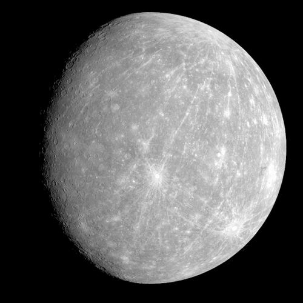
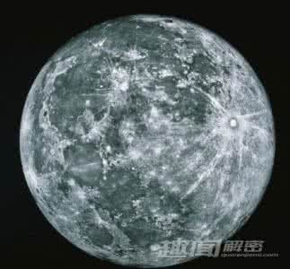
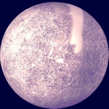
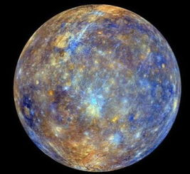
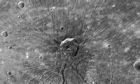
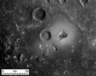
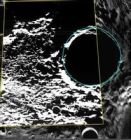

|
|
|
|
|
|
|
|
|
【左图】为水星近照----
---来自网络图
太阳系八大行星之一，
距离太阳最近的一颗
|  |
|  |
|  |
|  |
| 水星神话
墨丘利(拉丁语：Mercurius）在罗马神话中他是天公朱庇特(Juppiter)与女神迈亚(Maia）所生的儿子，担任诸神的使者和传译，又是司畜牧、商业、交通旅游和体育运动的神，还是小偷们所崇拜的神。他是朱庇特最忠实的信使，为朱庇特传送消息，并完成朱庇特交给他的各种任务。他行走敏捷，精力充沛，多才多艺。他的形象一般是头戴一顶插有双翅的帽子，脚穿飞行鞋，手握魔杖，行走如飞。他也是医药、旅行者、商人和小偷的保护神，西方药店经常用他的缠绕两条蛇的手杖作为标志。 |
火星近照 水星的颜色较暗但是很漂亮。初乍看，距离太阳最近的行星看上去似乎只是简单的黑白色，但是拍摄到的影像准确地描述了星球的详细信息，其中还包含人类看不到的红外颜色。 

 |
资料卡 |
位置: 第一位 到太阳的距离: 57,910,000 千米 自转时间: 58.65 地球日 公转周期: 87.97 地球年 公转速度: 47.8 千米/秒 轨道 偏心率:0.206 卫星: 无 直径: 4,878 千米 质量: 33000亿亿吨 平均密度: 5.427 克/厘米3 表面重力: (赤道) 3.701 米/秒2 逃逸速度: 4.435 千米/秒 平均地表温度: 179°C 最高地表温度: 427°C 最低地表温度: -173°C 大气组成 : 氦 42% 钠 42% 氧 15% 其它 1% |
小知识 |
2014年，美国航天局派往水星的探测器信使号，早前传来的照片中，却发现北极地区一个陨石坑附近有冰的存在，是首次真正发现水星有冰。 学者早于两年前已透过间接的分析指水星上存在着冰，但这次则是首次直接看到。专家估计冰块有数以十米厚，但亦可能延伸至坑洞内。虽然水星围绕太阳转一圈需时58个地球日，几乎整个大地都被阳光照射，但水星的极地则永远无法被太阳照到，温度低得有机会让冰形成。 |
友情链接：天文空间
©laizhiyang